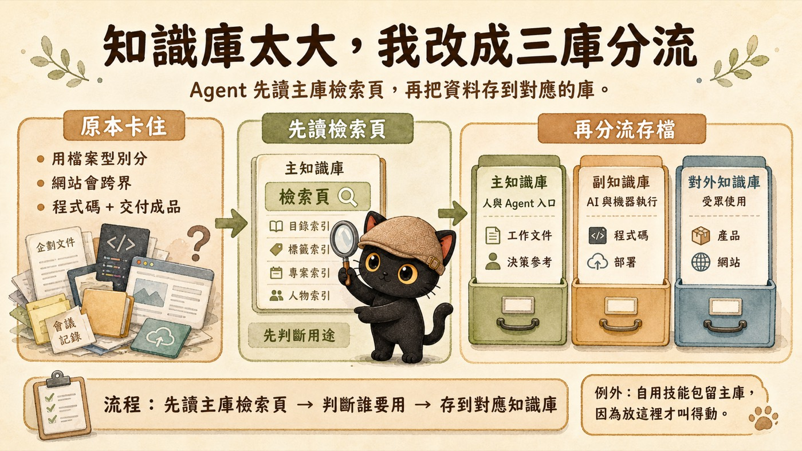

知識庫越長越大、開始翻不動，想把它拆開，又不知道該照什麼標準拆的人。
一套可以照做的拆庫方法：換一個判斷標準、分成三個庫、立一條存檔流程，再加一個例外處理。
一個判斷問題（這東西是誰要用的）、三個庫的具體分法、一條「先讀檢索頁再存檔」的流程。

全部混在一個庫，越大越難用
我的知識庫越長越大。一開始所有東西都存在同一個庫，企劃、會議記錄、程式碼、網站、技能包，全部混在一起。
到後來出現三個很具體的問題：
- 找一份文件要捲很久，搜尋還會撈出一堆不相干的東西。
- AI 進來讀，常讀到一堆它用不到的人類文件，或在大量檔案裡找不到該執行的程式。
- 我自己都記不清楚某個東西放哪，每次存檔都在猶豫。
我決定把它拆開。但拆之前先遇到一個問題：照什麼標準拆。標準選錯，拆完只會更亂。
第一個方案失敗：用檔案型別分會跨界
我最先用的標準是「檔案型別」：文件一庫，程式碼一庫。
做下去就出問題。我有一個對外網站，它同時是程式碼（要部署、要版控），又是要交給別人看的成品。照型別分，它兩邊都算，結果哪一邊都放不進去。
這不是單一例外。凡是「會交付出去的程式產物」都會卡在這條界線上。所以這個方案我直接放棄。問題不在分得不夠細，在判斷標準本身選錯了。
可行方案：改問「這東西是誰要用的」
我把判斷標準換成一個具體問題。每份檔案進來，只問一句：這東西是誰要用的？
答案只有三種，對應三個庫。
我自己工作、做決策要翻的東西。企劃、筆記、會議記錄、決策參考文件。這裡也是 AI 每次進來的入口。
機器在跑的東西。程式碼、版本控制、部署檔、技能包備份。我人不會直接翻，是 AI 在讀、在執行。
要交出去的成品。產品、對外網站、給客戶或學員的技能包。這個庫我還在逐步搬入。
回到剛剛卡住的網站：它是要交給受眾用的，存進對外知識庫。它是不是程式碼，不再參與判斷。一個問題就把跨界的東西定位好了。
運作機制：Agent 先讀檢索頁，再分流存檔
只分三個庫還不夠。庫一多，AI 存錯位置的機率反而變高。所以我在主知識庫放一張檢索頁，當所有存檔動作的第一站。完整流程三步：
檢索頁裡有四個索引：目錄索引、標籤索引、專案索引、人物索引。AI 進來先讀這張頁，先掌握整個庫的內容，知道東西該往哪掛。
拿上面那個問題判斷：這份東西是人用、AI 執行用、還是給受眾。三選一，不含糊。
按判斷結果存進主庫、副庫或對外庫，順手掛上對應的標籤和索引。存完，檢索頁也跟著更新。
一個例外：能不能運作優先於分類整齊
照「誰要用」分，會遇到一個看起來矛盾的情況。
有些技能包是 AI 在讀、在觸發的，照標準應該歸到 AI 的副知識庫。但它必須留在主知識庫，AI 才叫得動。一旦搬去副庫，它就觸發不了。
所以這類自用技能包，我讓它留在主庫。整理知識庫的時候，這一點很容易忽略：方法是工具，要服務實際運作，不是反過來。
整套方法收束成三句
第一，換判斷標準：別用檔案型別分，改問「這東西是誰要用的」。第二，分三個庫：人用的進主庫、AI 執行用的進副庫、受眾用的進對外庫。第三，立流程：每次存檔先讀主庫檢索頁，再判斷誰要用，再存到對應庫；遇到照規則擺就不能用的，以能運作為準。
這是我自己正在用的 AI 知識管理方法。完整的資料夾結構、檢索頁四個索引怎麼建、跨庫索引怎麼接，我會陸續整理在這個官網。想一起把知識庫整理好，歡迎先從社群開始。
每個月兩場免費講座。
點我加入 Line 社群 ↗